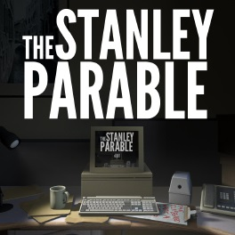
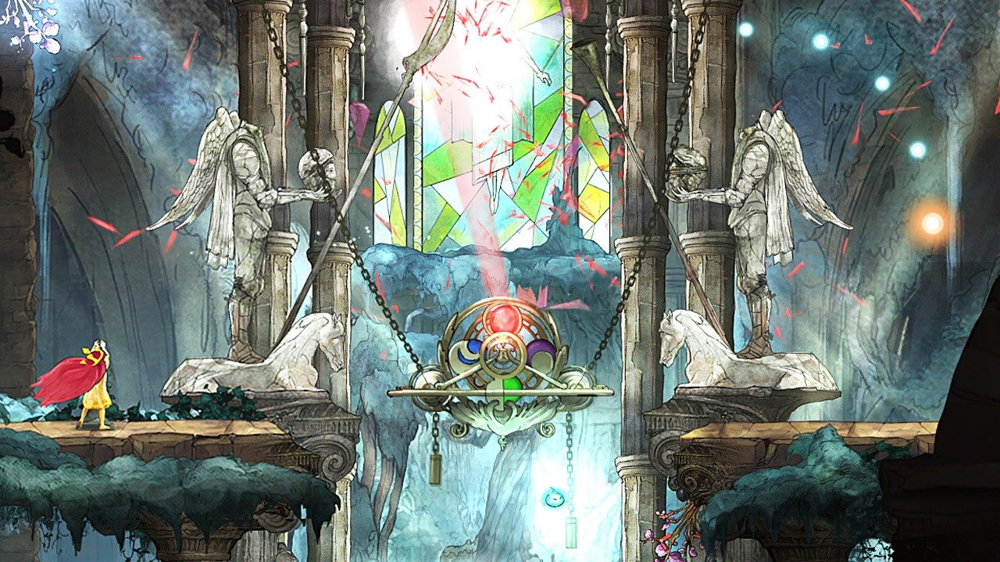
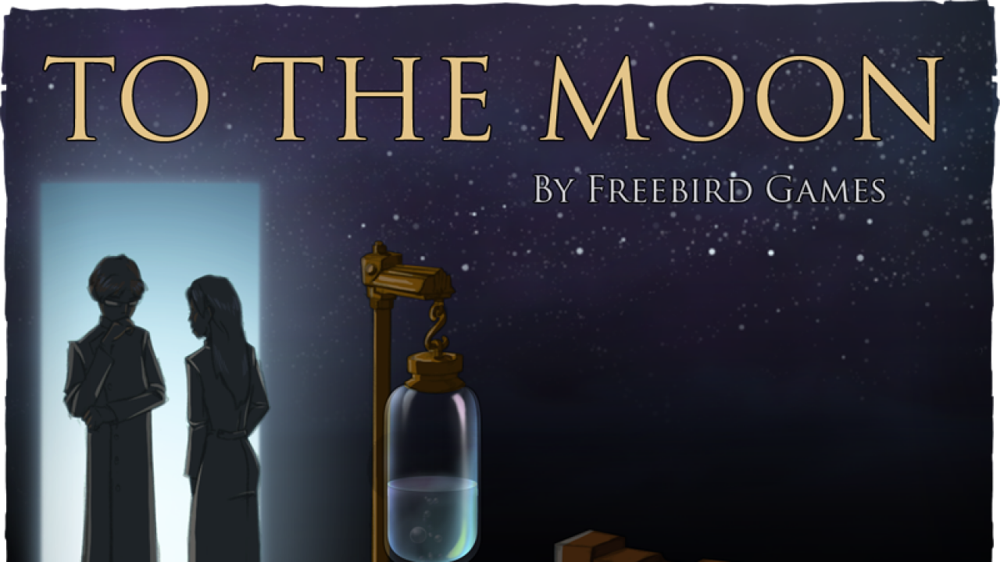
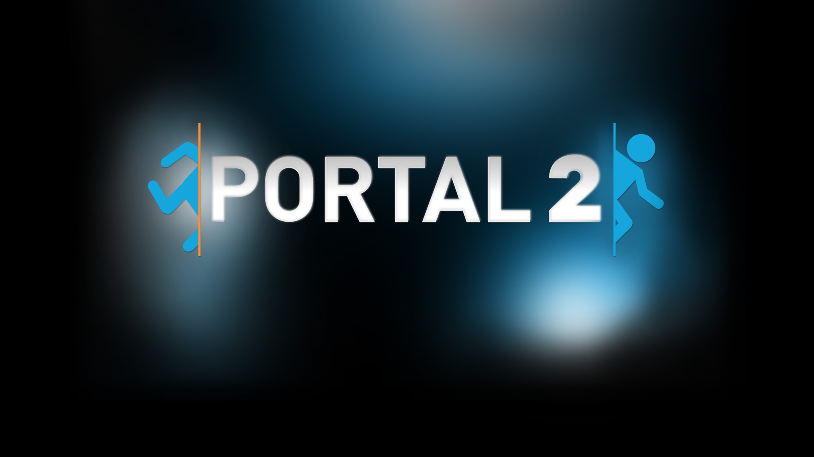
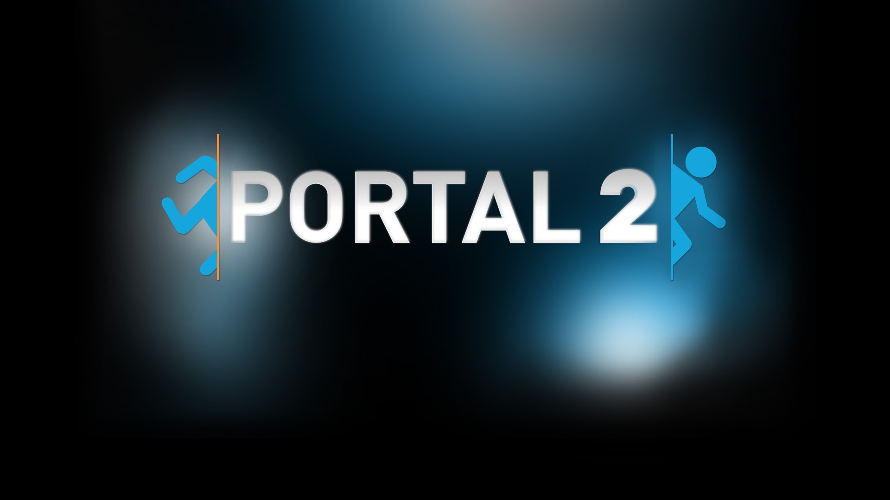

Minecraft
Minecraft was one of Monique's first PC games, before that she mostly played on her DS' and wii (which was her first introduction to video games). Monique still occasionally plays Minecraft, but is more into other games now.
The Stanley Parable
The Stanley Parable was a game Monique found from a youtuber and fell in love with, it wwas one of her earlier PC games as well. Monique loves to go in and play the game however she feels in that moment, sometimes choosing to listen to the narrator, but most of the time, just enjoying breaking rules.
Child of Light
Child of Light is Monique's FAVOURITE PC game, she discovered it by accident and is so happy she did. It is a beautiful and fascinating game with a good plot and an excellent battle system, it combines whimsy with action and holds a very special place in her heart. While she does not play it as often as she did before it is still a game she come back to without fail. She hopes to one day see a sequel for it because it was teased when the game was released on the Nintendo Switch. I think Monique would cry if it ever comes out.
To The Moon
To the Moon is an adorable game that creates a sense of nostalgia in Moniquue even though both it and her are not that old. It uses simple sprites and has a very good story line. It is not very action paccked but that is ok because sometimes Monique just likes to relax while playing a game. Monique has bought the prequel for it as well, but has not gotten around to playing it although she is very excited to. She is still waiting for a good sale on To the Moon's sequel but once the sale happens she will definitely be purchasing it.
 

Portal
Monique just got into both Portal and Portal 2 and it might have been a mistake because she enjoys both of them very much. If she continues down this path she most likely will not be leaving her room. She really enjoys the narration of the game and enjoys the fact that it challenges her mind becuase she has to figure out the puzzles.